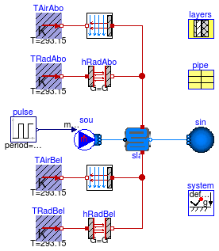
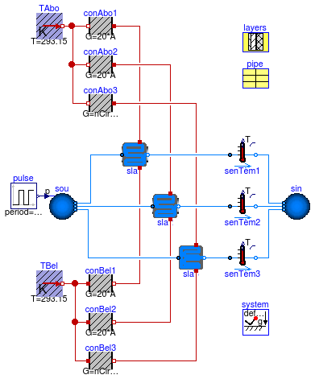

This package contains examples for the use of models that can be found in Buildings.Fluid.HeatExchangers.RadiantSlabs.
Extends from Modelica.Icons.ExamplesPackage (Icon for packages containing runnable examples).
| Name | Description |
|---|---|
| Model that tests the radiant slab | |
| Model that tests the radiant slab |
 Buildings.Fluid.HeatExchangers.RadiantSlabs.Examples.StepResponse
Buildings.Fluid.HeatExchangers.RadiantSlabs.Examples.StepResponse
This example models the step response of a radiant slab.
Extends from Modelica.Icons.Example (Icon for runnable examples).
| Type | Name | Default | Description |
|---|---|---|---|
| MassFlowRate | m_flow_nominal | 0.167 | Nominal mass flow rate [kg/s] |
| Area | A | 10 | Heat transfer area [m2] |
model StepResponse "Model that tests the radiant slab" extends Modelica.Icons.Example; package Medium = Buildings.Media.ConstantPropertyLiquidWater;inner Modelica.Fluid.System system; Sources.Boundary_ph sin(redeclare package Medium = Medium, nPorts=1) "Sink"; Sources.MassFlowSource_T sou( redeclare package Medium = Medium, use_m_flow_in=true, T=298.15, nPorts=1) "Source"; Modelica.Blocks.Sources.Pulse pulse( period=86400, startTime=0, amplitude=-m_flow_nominal, offset=m_flow_nominal); Buildings.Fluid.HeatExchangers.RadiantSlabs.SingleCircuitSlab sla( m_flow_nominal=m_flow_nominal, redeclare package Medium = Medium, layers=layers, iLayPip=1, pipe=pipe, sysTyp=Buildings.Fluid.HeatExchangers.RadiantSlabs.BaseClasses.Types.SystemType.Floor, disPip=0.2, A=A) "Slabe with embedded pipes"; parameter Modelica.SIunits.MassFlowRate m_flow_nominal= 0.167 "Nominal mass flow rate";Modelica.Thermal.HeatTransfer.Sources.FixedTemperature TAirAbo(T=293.15) "Air temperature above the slab"; Modelica.Thermal.HeatTransfer.Sources.FixedTemperature TRadAbo(T=293.15) "Radiant temperature above the slab"; Modelica.Thermal.HeatTransfer.Sources.FixedTemperature TAirBel(T=293.15) "Air temperature below the slab"; Modelica.Thermal.HeatTransfer.Sources.FixedTemperature TRadBel(T=293.15) "Radiant temperature below the slab"; HeatTransfer.Convection.Interior conAbo( A=A, conMod=Buildings.HeatTransfer.Types.InteriorConvection.Temperature, til=Buildings.HeatTransfer.Types.Tilt.Floor) "Convective heat transfer above the slab"; parameter Modelica.SIunits.Area A=10 "Heat transfer area";HeatTransfer.Convection.Interior conBel( A=A, conMod=Buildings.HeatTransfer.Types.InteriorConvection.Temperature, til=Buildings.HeatTransfer.Types.Tilt.Ceiling) "Convective heat transfer below the slab"; Modelica.Thermal.HeatTransfer.Components.BodyRadiation hRadAbo(Gr=A/(1/0.7 + 1 /0.7 - 1)) "Radiative heat transfer above the slab"; Modelica.Thermal.HeatTransfer.Components.BodyRadiation hRadBel(Gr=A/(1/0.7 + 1 /0.7 - 1)) "Radiative heat transfer below the slab"; HeatTransfer.Data.OpaqueConstructions.Generic layers(nLay=3, material={ Buildings.HeatTransfer.Data.Solids.Generic( x=0.08, k=1.13, c=1000, d=1400, nSta=5),Buildings.HeatTransfer.Data.Solids.Generic( x=0.05, k=0.04, c=1400, d=10),Buildings.HeatTransfer.Data.Solids.Generic( x=0.2, k=1.8, c=1100, d=2400)}) "Material layers from surface a to b (8cm concrete, 5 cm insulation, 20 cm reinforced concrete)"; Data.Pipes.PEX_RADTEST pipe "Pipe material"; equationconnect(pulse.y, sou.m_flow_in); connect(sou.ports[1], sla.port_a); connect(sla.port_b, sin.ports[1]); connect(TAirAbo.port, conAbo.fluid); connect(TRadAbo.port, hRadAbo.port_a); connect(TAirBel.port, conBel.fluid); connect(TRadBel.port, hRadBel.port_a); connect(conAbo.solid, sla.surf_a); connect(hRadAbo.port_b, sla.surf_a); connect(conBel.solid, sla.surf_b); connect(hRadBel.port_b, sla.surf_b); end StepResponse;
Buildings.Fluid.HeatExchangers.RadiantSlabs.Examples.SingleCircuitMultipleCircuit
This example compares the results of two models of a single circuit that are arranged in parallel, versus a model that directly implements two parallel circuits. Both configurations have the same mass flow rate and temperatures. For simplicity, a combined convective and radiative resistance which is independent of the temperature difference has been used. The model is exposed to a step change in pressure, which causes forward and reverse flow.
Extends from Modelica.Icons.Example (Icon for runnable examples).
| Type | Name | Default | Description |
|---|---|---|---|
| MassFlowRate | m_flow_nominal | 0.167 | Nominal mass flow rate for each circuit [kg/s] |
| Area | A | 10 | Heat transfer area for each circuit [m2] |
| Integer | nSeg | 3 | Number of volume segments |
| Integer | nCir | 2 | Number of parallel circuits for slab 3 |
model SingleCircuitMultipleCircuit "Model that tests the radiant slab" extends Modelica.Icons.Example; package Medium = Buildings.Media.ConstantPropertyLiquidWater;inner Modelica.Fluid.System system; Sources.Boundary_ph sin(redeclare package Medium = Medium, nPorts=3, p(displayUnit="Pa") = 300000) "Sink"; Modelica.Blocks.Sources.Pulse pulse( startTime=0, amplitude=50*400, offset=300000 - 50*200, width=50, period=86400/2); Buildings.Fluid.HeatExchangers.RadiantSlabs.SingleCircuitSlab sla1( m_flow_nominal=m_flow_nominal, redeclare package Medium = Medium, layers=layers, iLayPip=1, pipe=pipe, sysTyp=Buildings.Fluid.HeatExchangers.RadiantSlabs.BaseClasses.Types.SystemType.Floor, disPip=0.2, A=A, nSeg=nSeg) "Slabe with embedded pipes"; parameter Modelica.SIunits.MassFlowRate m_flow_nominal= 0.167 "Nominal mass flow rate for each circuit";Modelica.Thermal.HeatTransfer.Sources.FixedTemperature TAbo(T=293.15) "Air temperature above the slab"; Modelica.Thermal.HeatTransfer.Sources.FixedTemperature TBel(T=293.15) "Radiant temperature below the slab"; Modelica.Thermal.HeatTransfer.Components.ThermalConductor conAbo1(G=20*A) "Combined convection and radiation resistance above the slab"; parameter Modelica.SIunits.Area A=10 "Heat transfer area for each circuit";Modelica.Thermal.HeatTransfer.Components.ThermalConductor conBel1(G=20*A) "Combined convection and radiation resistance below the slab"; HeatTransfer.Data.OpaqueConstructions.Generic layers(nLay=3, material={ Buildings.HeatTransfer.Data.Solids.Generic( x=0.08, k=1.13, c=1000, d=1400, nSta=5),Buildings.HeatTransfer.Data.Solids.Generic( x=0.05, k=0.04, c=1400, d=10),Buildings.HeatTransfer.Data.Solids.Generic( x=0.2, k=1.8, c=1100, d=2400)}) "Material layers from surface a to b (8cm concrete, 5 cm insulation, 20 cm reinforced concrete)"; Data.Pipes.PEX_RADTEST pipe "Pipe material"; Modelica.Thermal.HeatTransfer.Components.ThermalConductor conAbo2(G=20*A) "Combined convection and radiation resistance above the slab"; Buildings.Fluid.HeatExchangers.RadiantSlabs.SingleCircuitSlab sla2( m_flow_nominal=m_flow_nominal, redeclare package Medium = Medium, layers=layers, iLayPip=1, pipe=pipe, sysTyp=Buildings.Fluid.HeatExchangers.RadiantSlabs.BaseClasses.Types.SystemType.Floor, disPip=0.2, A=A, nSeg=nSeg) "Slabe with embedded pipes"; Modelica.Thermal.HeatTransfer.Components.ThermalConductor conBel2(G=20*A) "Combined convection and radiation resistance below the slab"; Modelica.Thermal.HeatTransfer.Components.ThermalConductor conBel3(G=nCir*20*A) "Combined convection and radiation resistance below the slab"; ParallelCircuitsSlab sla3( redeclare package Medium = Medium, layers=layers, iLayPip=1, pipe=pipe, sysTyp=Buildings.Fluid.HeatExchangers.RadiantSlabs.BaseClasses.Types.SystemType.Floor, disPip=0.2, nSeg=nSeg, nCir=nCir, A=nCir*A, m_flow_nominal=nCir*m_flow_nominal) "Slabe with embedded pipes"; Modelica.Thermal.HeatTransfer.Components.ThermalConductor conAbo3(G=nCir*20*A) "Combined convection and radiation resistance above the slab"; Sensors.TemperatureTwoPort senTem1(redeclare package Medium = Medium, m_flow_nominal=m_flow_nominal/2) "Temperature sensor"; Sensors.TemperatureTwoPort senTem2(redeclare package Medium = Medium, m_flow_nominal=m_flow_nominal/2) "Temperature sensor"; Sensors.TemperatureTwoPort senTem3(redeclare package Medium = Medium, m_flow_nominal=nCir*m_flow_nominal) "Temperature sensor"; parameter Integer nSeg=3 "Number of volume segments";Sources.Boundary_pT sou( redeclare package Medium = Medium, nPorts=3, use_p_in=true, T=313.15) "Source"; parameter Integer nCir=2 "Number of parallel circuits for slab 3"; equationconnect(TBel.port, conBel1.port_a); connect(conBel1.port_b, sla1.surf_b); connect(sla1.surf_a, conAbo1.port_a); connect(TAbo.port, conAbo1.port_b); connect(TAbo.port, conAbo2.port_b); connect(conAbo2.port_a, sla2.surf_a); connect(TBel.port, conBel2.port_a); connect(TBel.port, conBel3.port_a); connect(TAbo.port, conAbo3.port_b); connect(conAbo3.port_a, sla3.surf_a); connect(conBel3.port_b, sla3.surf_b); connect(sla1.port_b, senTem1.port_a); connect(sla2.port_b, senTem2.port_a); connect(sla3.port_b, senTem3.port_a); connect(senTem1.port_b, sin.ports[1]); connect(senTem2.port_b, sin.ports[2]); connect(senTem3.port_b, sin.ports[3]); connect(conBel2.port_b, sla2.surf_b); connect(pulse.y, sou.p_in); connect(sou.ports[1], sla1.port_a); connect(sou.ports[2], sla2.port_a); connect(sou.ports[3], sla3.port_a); end SingleCircuitMultipleCircuit;